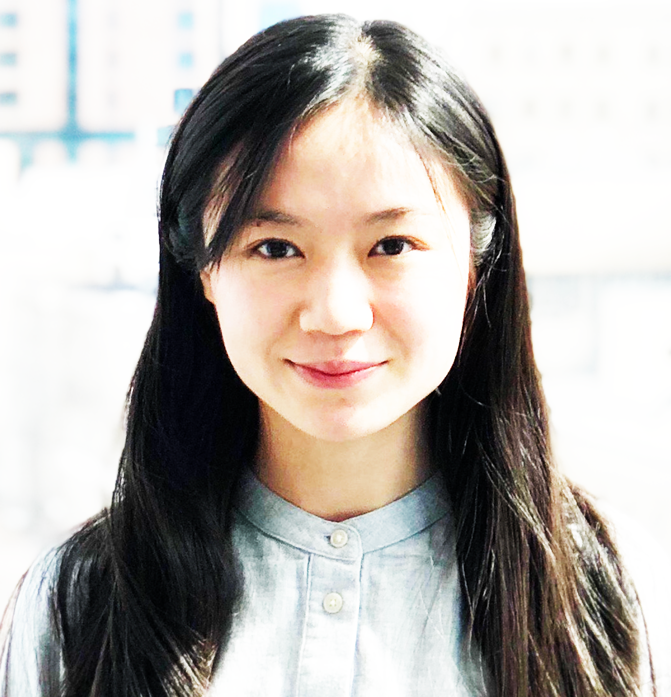

Ilon Liu
Principal Investigator
Ilon is a clinician-scientist and neurologist at Charité - Universitätsmedizin Berlin. She received her MD from Heidelberg University, and trained at University Hospital Heidelberg and at the Charité in Berlin. She was also a post-doctoral researcher in neuro-oncology in Mariella Filbin's lab at the Dana-Farber Cancer Institute in Boston.
Laurens Zaschke
MD/PhD Candidate
Fabian Semmler
MD Candidate